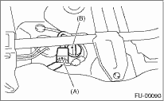
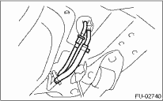
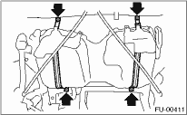

WARNING:
Place “NO OPEN FLAMES” signs near the working area.
CAUTION:
Be careful not to spill fuel.
1. Set the vehicle on a lift.
2. Release the fuel pressure. 
3. Drain fuel from fuel tank.
4. Remove the rear seat.
5. Disconnect the connector (A) of fuel tank cord to the rear harness.
6. Push the grommet (B) which holds the fuel tank cord on the floor panel into under the body.

7. Remove the rear crossmember.
8. Disconnect the 2 way valve hose (A) from the 2 way valve, and disconnect the canister hose (B) from the canister.

9. Loosen the clamp, and disconnect the fuel filler hose and air vent hose from the fuel filler pipe.

10. Move the clips, and disconnect the quick connector.
11. Disconnect the fuel hoses.

12. Support the fuel tank with transmission jack, remove the bolts from bands and dismount the fuel tank from the vehicle.
WARNING:
• A helper is required to perform this work.
• Some fuel may be remaining in the side of the fuel tank without the drain plug. Be careful not to let the fuel tank fall off when removing as it is bad balance on either side.
